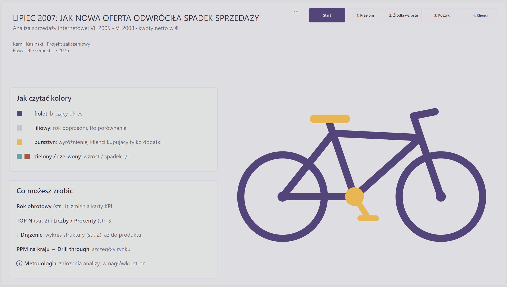
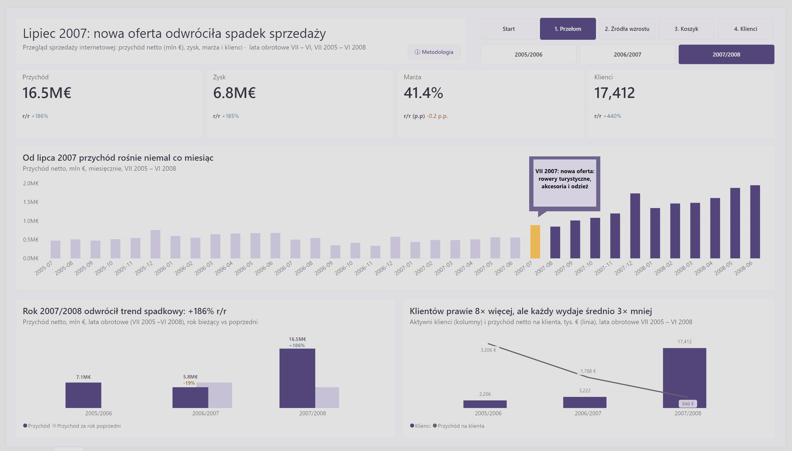
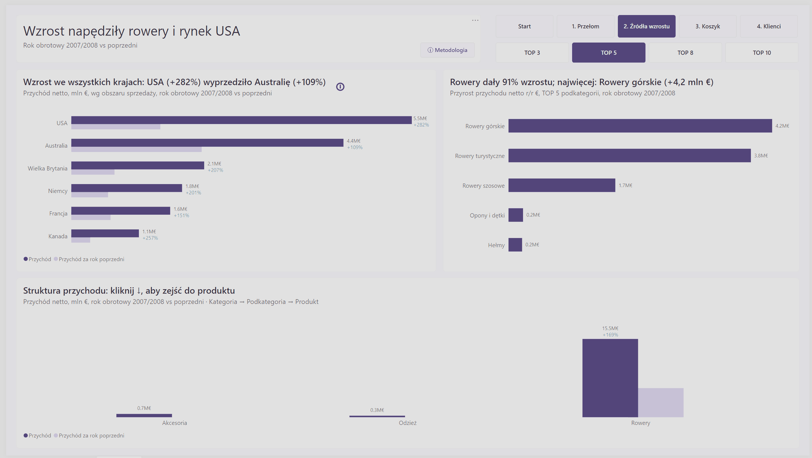
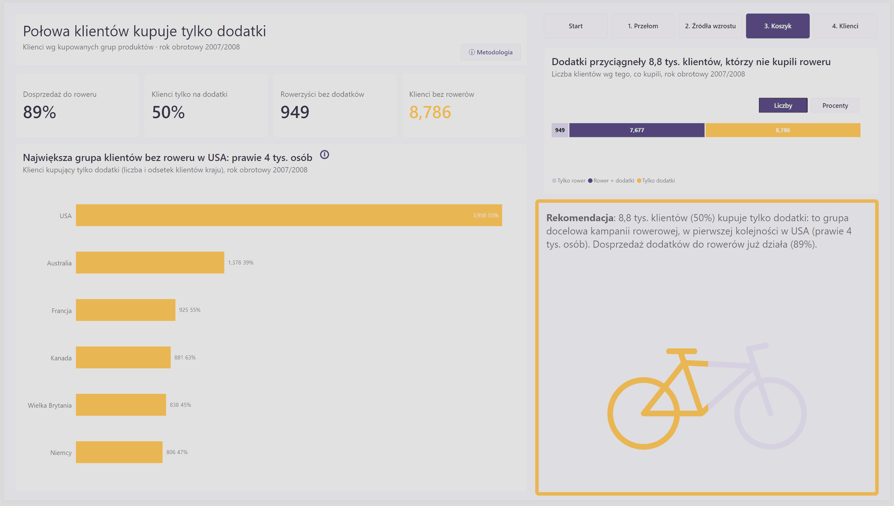
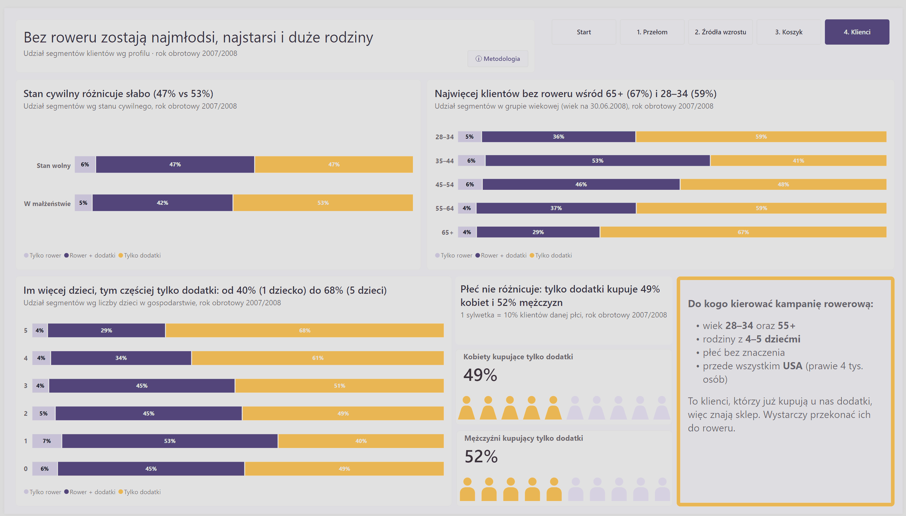
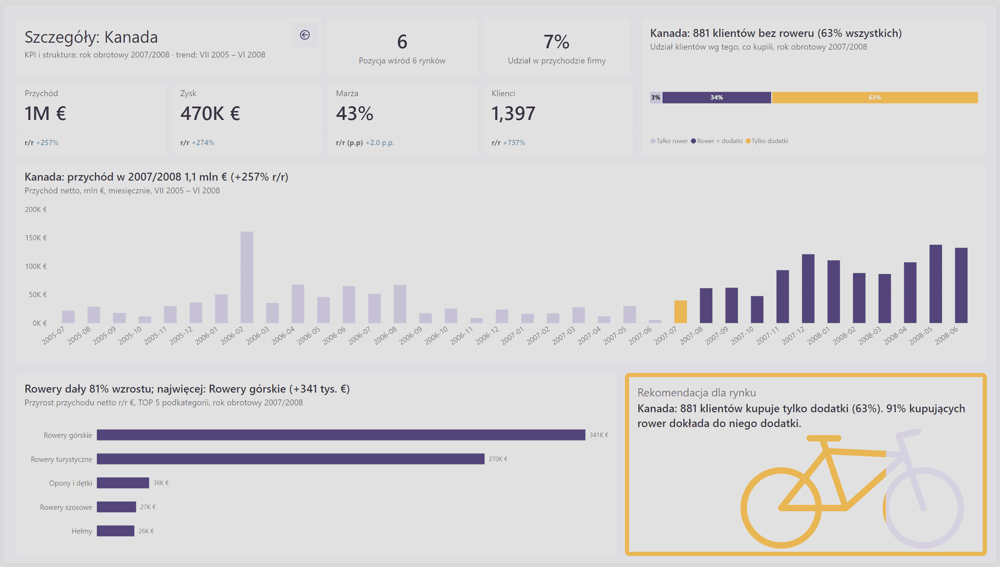

Problem
W roku obrotowym 2006/2007 przychód spadł o ok. 19% r/r: z 7,1 do 5,8 mln €. Firma sprzedawała wtedy wyłącznie rowery.
Projekt Power BI · studia podyplomowe 2026
Lipiec 2007: jak nowa oferta odwróciła spadek sprzedaży
Analiza sprzedaży internetowej VII 2005 – VI 2008 · kwoty netto w €
Raport prowadzi odbiorcę od problemu do decyzji. Tytuł każdej strony to wniosek z liczbą, więc samo czytanie tytułów daje całą historię.
W roku obrotowym 2006/2007 przychód spadł o ok. 19% r/r: z 7,1 do 5,8 mln €. Firma sprzedawała wtedy wyłącznie rowery.
Od lipca 2007 firma wprowadziła nową ofertę: nową linię rowerów turystycznych oraz akcesoria i odzież. W roku 2007/2008 przychód wzrósł do 16,5 mln € (+186% r/r).
Wzrost dała liczba klientów, a nie większe zakupy. Nowi klienci przyszli po tańsze dodatki.
W danych nie ma numeru zamówienia, więc koszyk liczę na poziomie klientów (rok obrotowy 2007/2008).
Kampania rowerowa skierowana do klientów, którzy kupują tylko dodatki, bo znają już sklep. W pierwszej kolejności w USA (prawie 4 tys. osób), z akcentem na grupy 28–34, 55+ i duże rodziny.
Model: płatek śniegu, 7 tabel z bazy SQL Server (tryb Import) i własna tabela dat. 39 miar w tabeli _Miary, podzielonych na 7 folderów.
Funkcjonalności: CALCULATE, Time Intelligence (SAMEPERIODLASTYEAR), drill-down, drill-through, bookmarki, parametr TOP N, niestandardowe etykiety, dynamiczne tytuły i kolory, grafiki SVG z DAX, nawigacja i przyciski, IBCS, dopracowane tooltipy.






Nazwy według konwencji uczelni: $ waluta, # liczby, % procenty, zmienne VAR __Nazwa.
W latach kalendarzowych rok 2008 miał tylko 6 miesięcy i wyglądał na plateau. Rok obrotowy pokazał prawdziwą historię.
-- kolumna w DimData (ADDCOLUMNS)
"RokObrotowy",
VAR __Rok = YEAR([Date])
VAR __RokStart = IF(MONTH([Date]) >= 7, __Rok, __Rok - 1)
RETURN __RokStart & "/" & (__RokStart + 1)Zamiast koszyków porównuję zbiory klientów. Ta sama para zmiennych z EXCEPT daje klientów, którzy kupili tylko dodatki.
# KlienciRoweryIDodatki =
VAR __KlienciRowery = CALCULATETABLE(VALUES(FactInternetSales[Klucz klienta]), DimKategoria[Nazwa Kategorii] = "Rowery")
VAR __KlienciDodatki = CALCULATETABLE(VALUES(FactInternetSales[Klucz klienta]), DimKategoria[Nazwa Kategorii] <> "Rowery")
RETURN COUNTROWS(INTERSECT(__KlienciDodatki, __KlienciRowery))
-- # KlienciDodatkiBezRoweru: RETURN COUNTROWS(EXCEPT(__KlienciDodatki, __KlienciRowery))ALL liczy ranking względem wszystkich podkategorii, a filtry roku i kraju z innych tabel zostają.
$ PrzyrostTopNPodkategorie =
VAR __N = [ParametrTopN Value]
RETURN
CALCULATE(
[$ PrzyrostPrzychodu],
FILTER(
DimPodkategoria,
RANKX(ALL(DimPodkategoria), [$ PrzyrostPrzychodu]) <= __N
)
)Rok VII–VI pokazał spadek o 19%, a potem +186%. Sprawdziłem, że wniosek trzyma się też przy porównaniu tych samych miesięcy (I–VI) w latach kalendarzowych.
Pierwsza intuicja: „wzrost dały dodatki”. Ranking przyrostu pokazał, że 91% wzrostu dały rowery, a do oferty weszła też nowa linia rowerów turystycznych.
Brak filtra roku na stronie zawyżał ranking: trzy podkategorie dawały więcej niż cały przyrost firmy. Błąd wyłapałem dzięki liczbom kontrolnym.
Zbiory klientów (INTERSECT / EXCEPT) zamiast koszyków. Definicję i ograniczenie opisałem w nocie metodologicznej raportu.
Sylwetka wypełniona do połowy wysokości zakrywała ok. 75–80% powierzchni i przekłamywała proporcje. Zamieniłem ją na piktogram 10 sylwetek (1 = 10%).
Wskaźnik lift (≈ 0,94, nie różnicuje grup), CROSSFILTER (zbędny, liczę w tabeli, do której dociera filtr), SUMX dla zysku (ilość zawsze = 1), panel filtrów jako bookmark (kłóciłby się z tytułami-wnioskami).
Dane: przykładowa baza Microsoft AdventureWorks (przetłumaczona wersja udostępniona w ramach kursu). Dane nie dotyczą prawdziwej firmy, kwoty są w umownej walucie €.
Kontekst: projekt zaliczeniowy I semestru studiów podyplomowych z analizy danych (Power BI, 2026).
AI: projekt był konsultowany z asystentem AI, który zadawał pytania i robił code review. Model danych, miary i decyzje wykonałem sam. Gotowe propozycje AI dotyczyły m.in. motywu JSON, miar SVG i części tytułów dynamicznych.